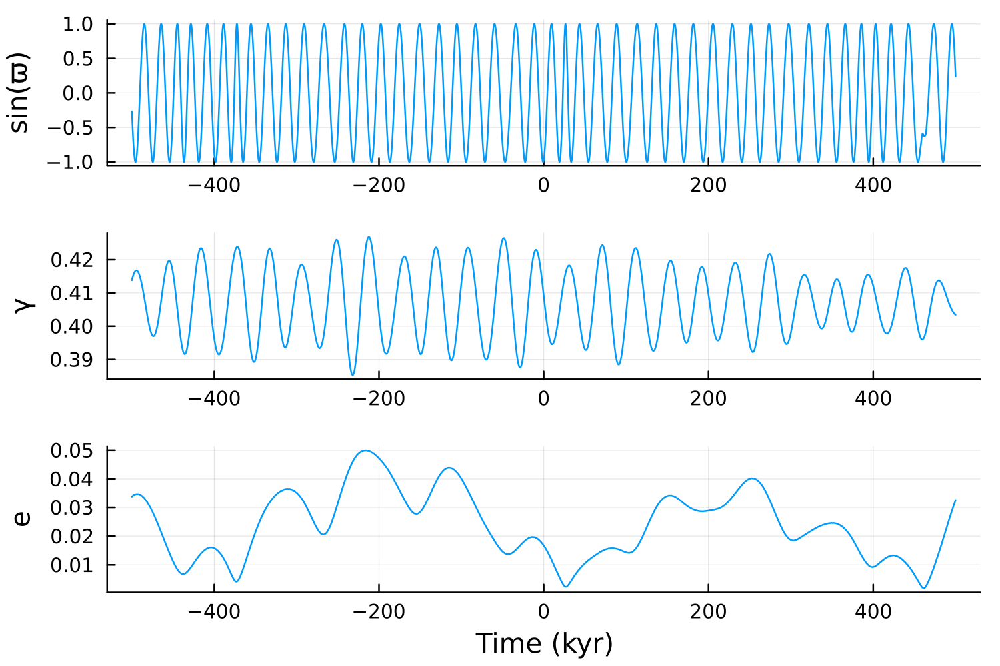
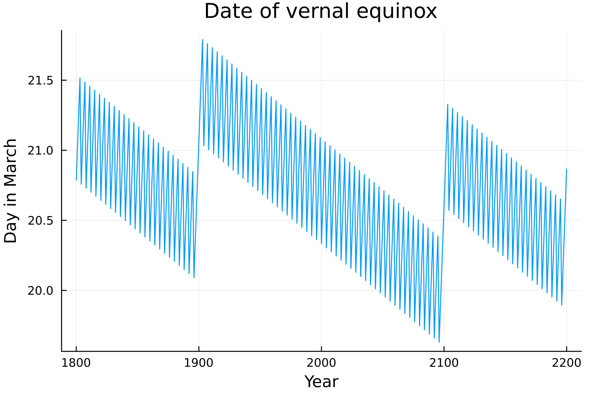
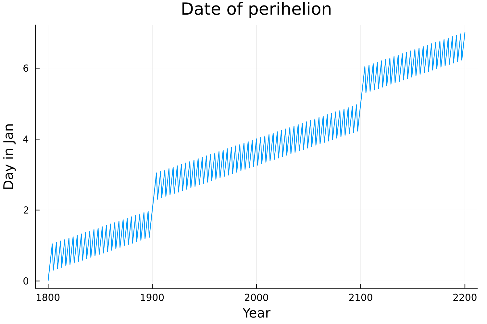
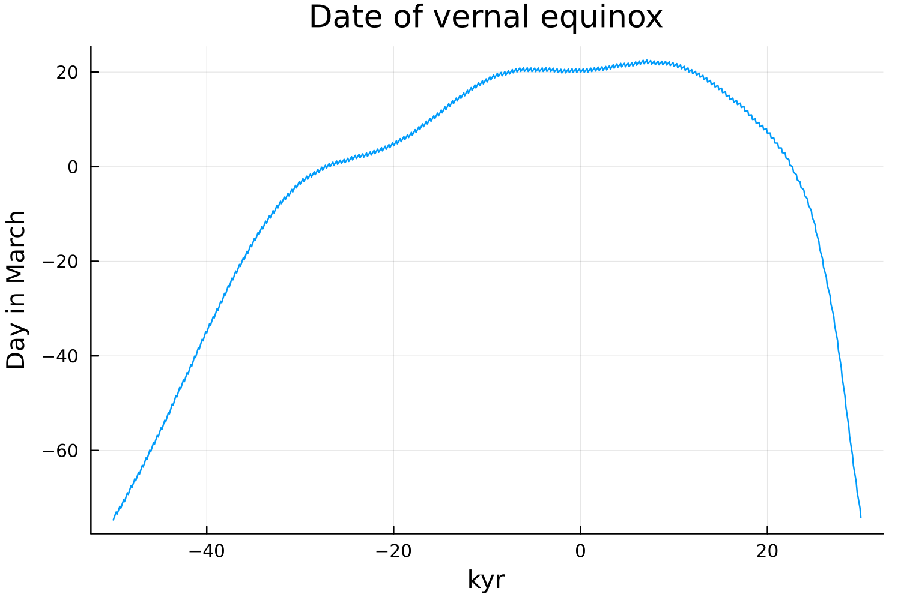

Milankovitch Cycles
Variations in orbital parameters
using Insolation
using Plots
od = Insolation.OrbitalData()
dt = collect(-500e3:100:500e3); # years
y = hcat(collect.(orbital_params.(Ref(od), dt))...);
ϖ, γ, e = y[1,:], y[2,:], y[3,:];
p1 = plot(dt ./ (1e3), sin.(ϖ), legend=false);
ylabel!("sin(ϖ)");
p2 = plot(dt ./ (1e3), γ, legend=false);
ylabel!("γ");
p3 = plot(dt ./ (1e3), e, legend=false);
ylabel!("e");
xlabel!("Time (kyr)")
plot(p1, p2, p3, layout = grid(3,1), size=(600,400), dpi=250);
savefig("orbital_params.png")"/home/runner/work/Insolation.jl/Insolation.jl/docs/build/orbital_params.png"
Variations in date of vernal equinox and perihelion on centennial timescales
using Roots
using Optim
include("find_equinox_perihelion_dates.jl")
years = 1800:2200;
days_eq = zeros(length(years));
days_per = zeros(length(years));
od = Insolation.OrbitalData()
for (i,year) in enumerate(years)
f = (x -> zdiff(x, year, od))
days_eq[i] = find_zeros(f,-30,60)[1]
f = (x -> edist(x, year, od))
res = optimize(f,-50,50)
days_per[i] = Optim.minimizer(res)[1]
end
plot((years), days_eq, legend=false, dpi=250)
xlabel!("Year")
ylabel!("Day in March")
title!("Date of vernal equinox")
savefig("equinox_dates.png")
plot((years), days_per, legend=false, dpi=250)
xlabel!("Year")
ylabel!("Day in Jan")
title!("Date of perihelion")
savefig("perihelion_dates.png")"/home/runner/work/Insolation.jl/Insolation.jl/docs/build/perihelion_dates.png"The Gregorian calendar was introduced (with leap years and leap centuries) precisely to keep the vernal equinox approximately fixed at March 21 on centennial timescales.  
Variations in date of vernal equinox on millenial timescales
using Roots
include("find_equinox_perihelion_dates.jl")
od = Insolation.OrbitalData()
years = -50e3:100:30e3
days_eq = zeros(length(years))
for (i,year) in enumerate(years)
f = (x -> zdiff(x, year, od))
days_eq[i] = find_zeros(f,-100,100)[1]
end
plot((years / 1000), days_eq, legend=false, dpi=250)
xlabel!("kyr")
ylabel!("Day in March")
title!("Date of vernal equinox")
savefig("equinox_dates_long.png")"/home/runner/work/Insolation.jl/Insolation.jl/docs/build/equinox_dates_long.png"As we can see however, the vernal equinox changes appreciably on very long timescales. For studies of paleoclimates, it is often conventional to reference the day of year relative to the vernal equinox rather than relative to January 1 to make meaningful comparisons of "seasons" and the like. 